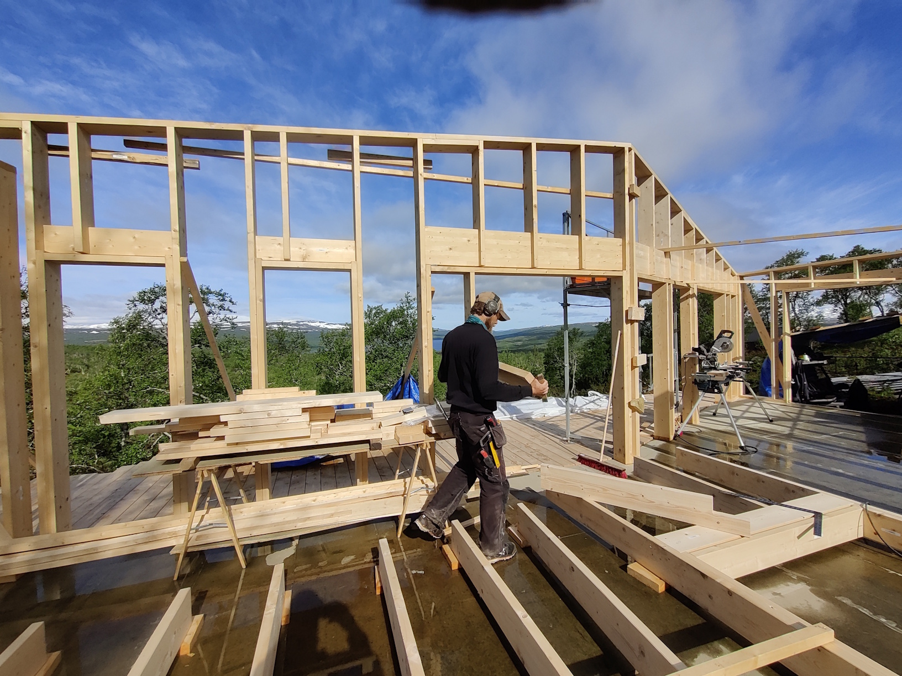
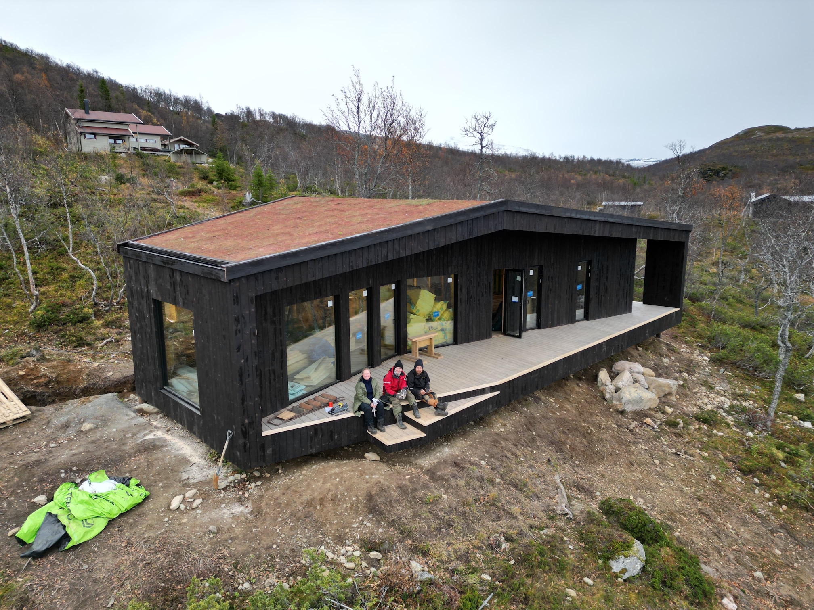

Prosjekter / Byggeprosjekt
Hytte i Stugudal
Sommeren 2022 jobbet jeg sammen med arkitektene og snekkerne i Studio 2x8 med å bygge en hytte i Stugudal, tegnet av Sami Rintala. Vi overleverte et kledd og lukket råbygg med isolert tak og gulv høsten 2022.
Jeg arbeidet på prosjektet i seks uker totalt. Det var en lærerik sommer — å følge et bygg fra grovt skjelett til ferdig lukket skall gir en forståelse av konstruksjonslogikk som ikke finnes i noen lærebok. Hva som kan gjøres i hvilken rekkefølge, hva som haster og hva som kan vente.
Hyttens uttrykk er enkelt og mørkt — liggende panel, saltak, liten og kompakt. Den sitter godt i fjellterrenget.
Nederste foto: Jesper Vik


